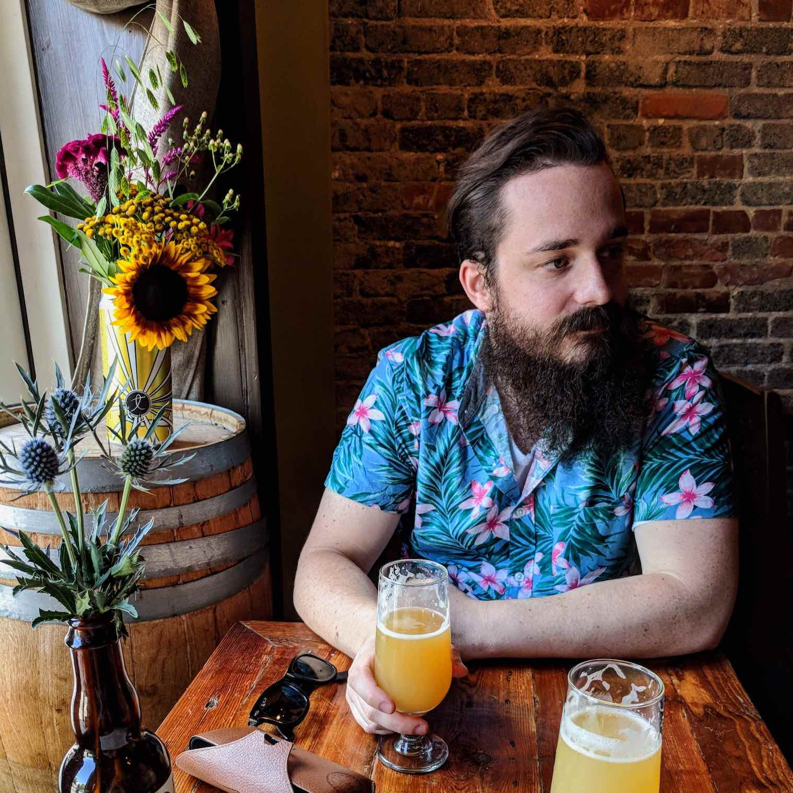

Hello! I'm Cole.
It's nice to meet you.
Hey there! My name is Cole Kettler. My pronouns are he / him / his. 
I work as a software engineer in Philadelphia, PA. I primarily work as a DevOps engineer. I also have experience as a web developer, mostly with JavaScript frameworks and web services. I like to help make people's days better. 💖
I'm a fermentation enthusiast and regularly make my own beer, kombucha, and pickles. I'm a lover of food and an avid cook, and I particularly enjoy Sichuan, Punjabi, Thai, French, and Southern Italian food. There isn't much food out there that I don't enjoy. 🍲
I enjoy board games and tabletop RPGs like Dungeons & Dragons. I'm always delighted to sit down for a game with friendly folks. 🎲
If you would like to get in touch with me, please feel free to reach out on one of the platforms below. I'm usually @colekettler everywhere else. 🐉
Work & Programming
I'm currently working as a DevOps Engineer at Penn Libraries. I spend most of my time on DevOps practices and culture, containers, orchestration tools, monitoring and alerting stacks, and distributed systems.
Social & Writing
I mostly use social media as a means of keeping in touch with the world, but I do write from time to time. Work Cole and Not-Work Cole are the same human.
Causes
These causes are very important to me. If you would consider supporting some of them as well, it would mean the world. 💖